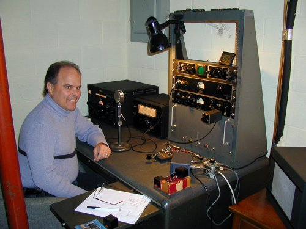

|

Gary is shown here with his Millen transmitter
setup. Consisting of the 90801 transmitter and the 90831 (version
2) modulator. The large gray unit on the bottom of the rack is
a homebrew power supply which powers both the aforementioned.
Occupying the top position of the rack is his 90902 monitoring
scope. To the left of the rack is a 90711 VFO. Gary also owns
a Millen 90881 high power amplifier unit which will one day bring
this station to the power house category!
Gary has been an active member of the JMS and
was one of the key operators at the fall 2001 W1HRX 100th Anniversary
operation (see elsewhere at this site) at the AWA annex. An active
member of the Antique Wireless Association (AWA) and their Carolinas
Chapter (CC-AWA). He can often be found wondering the swap area
at the annual AWA conference with his wonderful wife Laura. Gary
is also an avid collector of early broadcast radios and communications
equipment. |